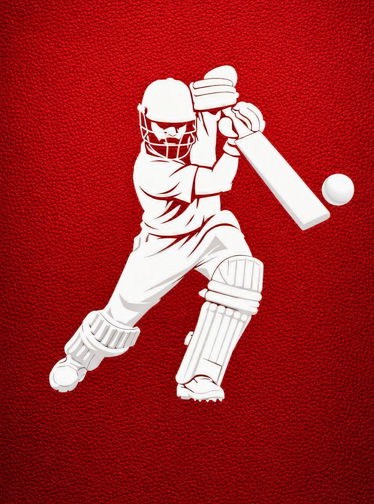
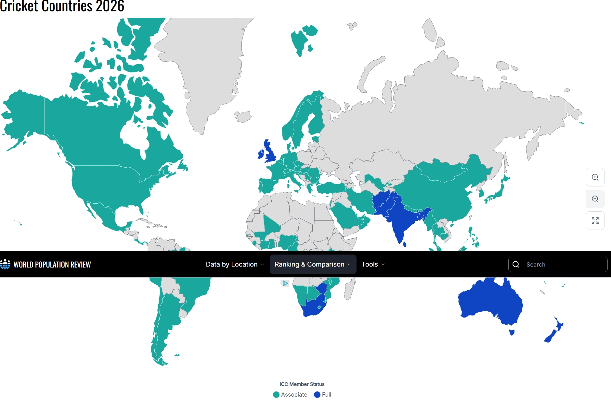

Early play
Evidence suggests children were playing cricket in the Weald region of Kent and Sussex.
A game of skill, spirit & strategy
From a sunlit village green to packed stadiums around the world, cricket is a bat-and-ball game built on precision, teamwork, and unforgettable moments.

The basics
Cricket is a bat-and-ball game between two teams of eleven players. The aim is to score more runs than the opposing side on a circular or oval field, with a rectangular pitch at its centre.
Two batters defend their wicket and try to score. The fielding team bowls the ball, protects the boundary, and seeks to dismiss the batters. Matches can be played in three major formats: Test cricket, One Day Internationals (ODIs), and Twenty20.
Where it began
Cricket began in south-east England and grew from a children’s pastime into one of the world’s most followed sports.
Evidence suggests children were playing cricket in the Weald region of Kent and Sussex.
A Guildford court case recorded John Derrick’s recollection of playing “creckett” as a schoolboy.
Records and dictionaries describe adult play, showing the game’s growing popularity.
Early written laws established core rules for pitch length, wickets, and play.
A global game
Cricket has a home far beyond its English origins. ICC members span every inhabited continent, from long-established full members to associate members helping the game grow in new places.
See World Cup history